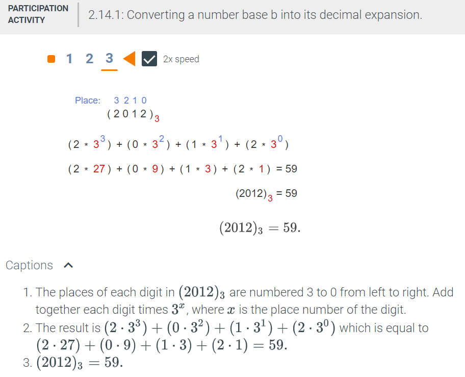
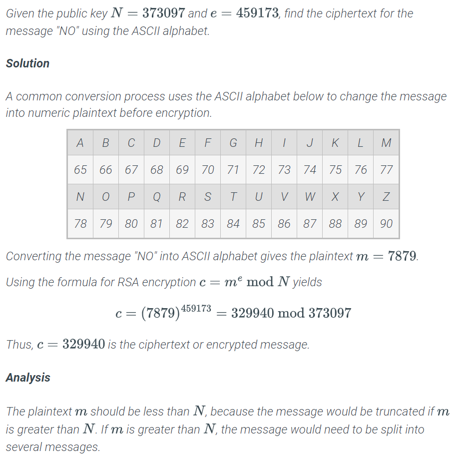
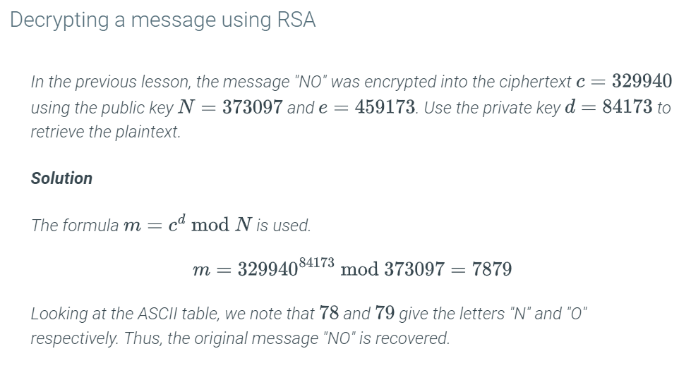
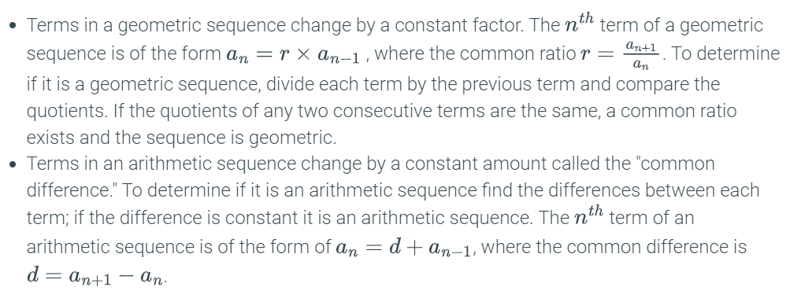
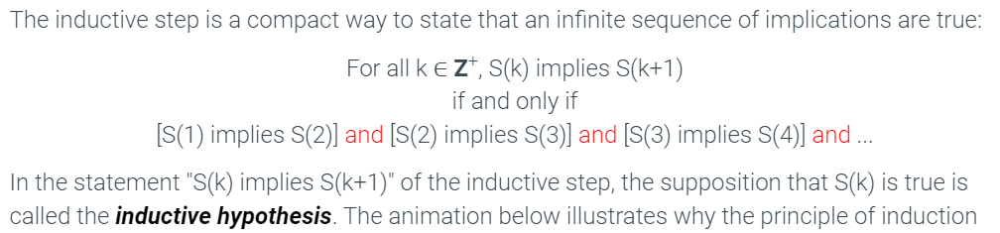
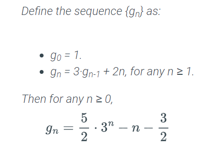
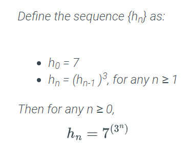
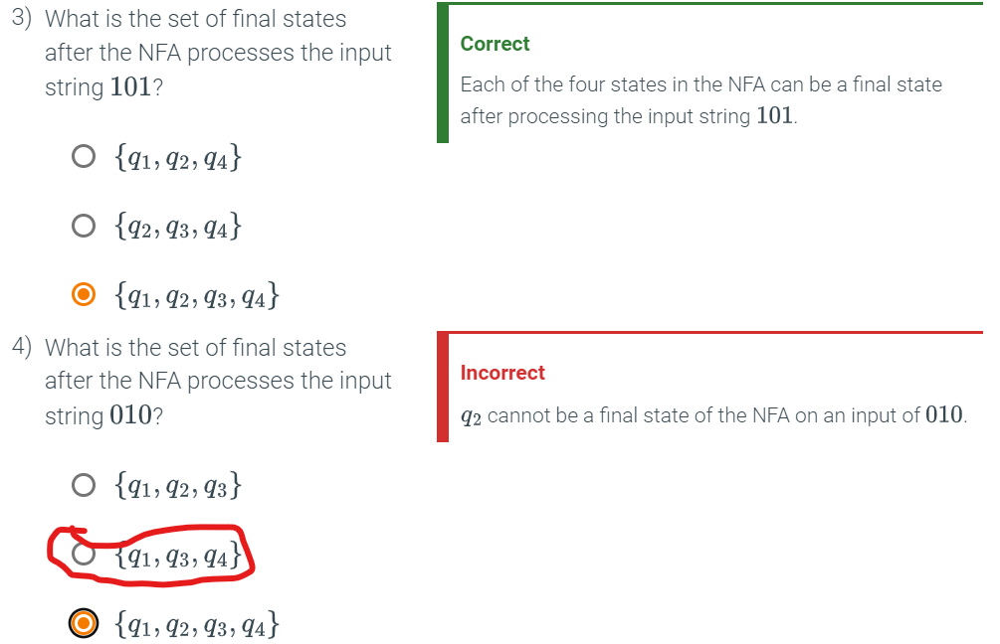
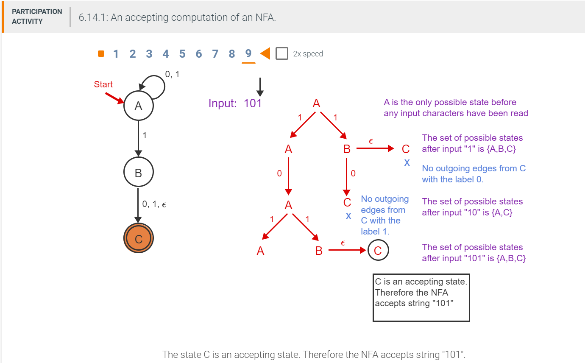
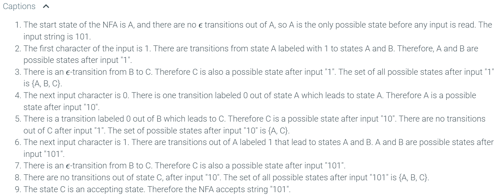

Unit 1
Some algorithms to look up:
https://www.youtube.com/watch?v=DjYZk8nrXVY
-
Prefix Sum
-
Two Pointers
-
Sliding Window
-
Fast and Slow pointers
-
Linked-List in place reversal
-
Monotonic Stack
-
Top 'k' Element
-
Find 'k' largest: use min heap
-
Find 'k' smallest: use max heap
-
-
Overalpping Intervals
-
Modified Binary Search
-
Binary Tree Traversal
-
Depth First Search
-
Breadth First Search
-
Matrix Traversal
-
Back Tracking
-
Dynamic Programming
1.1 Algorithms
1.2 Algorithm Structures
Module 1 will cover these lessons:
- Introduction to algorithms
- If-then algorithms
- For-loop algorithms
- While-loop algorithms
- Nested loop algorithms
1.3 Introduction to Algorithms
An algorithm is a step-by-step method for solving a problem. A description of an algorithm specifies the input to the problem, the output to the problem, and the sequence of steps to be followed to obtain the output from the input.
There are three basic building blocks of an algorithm:
- assignments: values to variables
- conditional statements: direct flow of steps
- loops: allow for steps to be repeated
A description of an algorithm usually includes:
- A name for the algorithm
- A brief description of the task performed by the algorithm
- A description of the input
- A description of the output
- A sequence of steps to follow
1.4 If-then algorithms
If-statements
"if" statements are branches?
If-else statements
1.5 For-loop algorithm
An iteration is a process where a set of instructions or structures are repeated in a sequence a specified number of times or until a condition is met.
To control the iterations, for-loops use an index or a counter and a variable that counts how many times a step or a block of steps executes.
1.6 While-loop algorithm
A while-loop iterates an unknown number of times, ending when a certain condition becomes false.
1.7 Nested loop algorithm
Placing a loop within another loop is known as nesting. When a loop exists within another loop, it is called a nested loop.
The nested loop, known as the inner loop
1.8 Analyzing Algorithms
This module contains three lessons:
- Computational complexity
- Evaluating algorithm complexity
- Worst-case analysis
1.9 Computational complexity
How do you know which algorithm is more efficient? By counting the operations that will happen for an input of any size, you would be able to see how their resource requirements grow.
Algorithm complexity: which is the study of the efficacy of algorithms
-
time complexity: the time the algorithm requires to run. time depends on the speed of the processing unit, the number of calculations that need to be performed, the number of conditions that need to be evaluated, or the number of iterations to be completed by the loops.
-
space complexity: the amount of memory used. The values of all variables, including the values of the input variables and all other values that will be computed, need to be stored somewhere in the memory of the system—in the RAM, hard drive, or external devices.
Time and space efficiency are measured in terms of the input size.
Algorithm Fibonacci-1
The first two elements of the Fibonacci sequence are both 1:
The algorithm calculates the Nth element of the Fibonacci sequence by calculating all terms:
This one has a constant runtime, the one above grows with n:

1.10 Evaluating algorithm complexity
** Atomic Operations**: each algorithm uses assignments, conditional statements, and loops, and performs a variety of operations, such as addition and multiplication. These operations (e.g., addition, multiplication, comparison) that one would find in a single line of pseudocode, are referred to as atomic operations. They are called "atomic," because they cannot be split any further; a computer would evaluate each in one step.
Max: = 0 # Atomic operation note 1
For i: =1 to n # Atomic operation note 2 and 3
If (a[i] > Max), Max: = a[i] # Atomic operation note 4
End-for
Max: = 0, occurs once.
-
Note 2: In the first iteration of the for loop, two atomic operations take place.
i:= 1as an assignment andi<nfor a conditional statment. These 2, plus the one assignment above, create 3 atomic operations on the first iteration. -
Note 3: On the preceeding iterations of the for loop,
i:= 1i will increment, andi<nthe conditional statement will execute again. Since the loop is iteratingntimes, and everytime it iterates these two atomic operations occur, the count is2n + 3. The three from the first iteration are added. -
Note 4:
a[i] > Maxis always performed to determine if branching is needed. This occursntimes, so add to the previous equation(2n + 3) + nis equal to3n +3. This will represents the best case scenario becauseMax:= a[i]is never called. Worst case scenarioMax:= a[i]is called on every iteration ofn. That will add to what was the best case scenario(3n + 3) + nwhich is4n + 3.
Since Atomic operations 2 and 3 occur every time, this adds 2n operations to
the count.
Observe the following atomic operations:
- Assigning a value to a variable
- Looking up the value of a particular element in a sequence
- Comparing two values
- Incrementing a value (and/or arithmetic operations such as addition and multiplication)
Recall that a sequence is an ordered set of elements—a list of numbers or objects in a special order.
1.11 Worst-case analysis
1.12 Big-O Estimates
This module contains two lessons:
- Asymptotic growth
- Algorithms and big-O
1.13 Asymptotic growth
Keeping track of all the constant factors can be overwhelming. Instead computer scientists use a special type of language, asymptotic notations, to determine running time without keeping track of constant factors and to capture how the running time of the algorithm grows with the size of the input.
asymptotic complexity: the behavior of the complexity function as n grows.
Eventually, we arrived at the function F(n) = n, which is the asymptotic run time function of the algorithm. The function is void of constants and it only retains the fastest growing component of the atomic operations counting function.
As a refresher: for an exponential function, the coefficient of the exponent is irrelevant to assessing the growth of the function, so the asymptotic run function is usually expressed as 2n; whereas, a logarithmic function is expressed without the need for specifying the base. So, the asymptotic run time function for:
- f(n) = 1,000,032 is 1
- f(n) = 1000333n is 2n
- f(n) = log10003 n is log(n)
This filter of "dropping all factors" and of "keeping the largest growing term" as described above is what we call asymptotic behavior.
Rule of Thumb:
-
Simple programs can be analyzed by counting the nested loops of the program.
-
A single loop over n items yields asymptotic complexity n.
-
If you have a program that calls a function within a loop and you know the number of atomic operations the called function performs, it is easy to determine the number of atomic operations of the whole program. For example, let’s consider the following algorithm:
-
Since you know that f(n) is a function that performs exactly n instructions, you then know that the number of instructions of the whole program is asymptotically n2, as the function is called exactly n times.
-
Given a series of for-loops that are sequential, the slowest of them determines the asymptotic behavior of the program.
-
Two nested loops followed by a single loop is asymptotically the same as the nested loops alone, because the nested loops dominate the simple loop.
Asymptotic Notation
There are three types of asymptotic notation that are commonly used in algorithmic analysis, O(n) ("big-O"), Ω(n) ("Omega"), and θ(n) ("Theta").
-
The big-O notation—O(n)—serves as a rough upper bound for functions (disregarding constants and small input values).
-
The Ω notation—Ω(n)—is similar to big-O, except that it provides a lower bound on the growth of a function.
-
The Θ notation—Θ(n)—indicates how the algorithm performs for any case. This is referred to as an average time or random case function and, when possible, gives us a sense of how the algorithm performs in any case. Note that it is often possible to estimate upper and lower bounds, but not average cases especially if there are complex branching in the code.
1.14 Algorithms and big-O
Big-O is the notation used to state that a function is the upper bound for the asymptotic complexity, while big-Omega is used for a lower bound. In other terms, when an algorithm is said to be O(f(n)), then its asymptotic complexity never surpasses f(n), and when an algorithm is Ω(g(n)) then its complexity is never smaller than g(n). The functions f(n) and g(n) are called upper and lower bounds of the asymptotic complexity of the algorithm and the following is true by definition: Ω(f(n)) ≤ Θ(f(n)) ≤ O(f(n)).

Unit 2
2.1 Number Theory and Cryptography
Material in this Unit
- Division algorithm
- Modular arithmetic and multiplication
- Congruence mod n
- Prime factorization, greatest common divisor (GCD), and least common multiple (LCM)
- Number representations
- Fast exponentiation
2.2 Divisibility and Modular Arithmetic
This page marks the beginning of Module 4. This module contains three lessons:
- The division algorithm
- Modular arithmetic and multiplication
- Congruence modulo
2.3 The division algorithm
Modular arithmetic has division, addition, multiplication, and subtraction operations. The good news is that modular arithmetic only uses integers-no fractional or decimal values.
number theory the branch of mathematics concerned with the study of integers.
Integer Division
Integer division: the input and output values must always be integers. For example, when the number 9 is divided by 4, the answer is 2 with a remainder of 1, instead of 2.25.

If a number x divides two different numbers, y and z, then x divides any linear combination of y and z.
A linear combination of two numbers is the sum of multiples of those numbers. For example, 3x - 7y and -2x + 4y are both linear combinations of x and y.
A statement about a generic linear combination uses variables to denote the integer coefficients. For example, sx + ty is a linear combination of x and y.
- Let x, y, and z be integers. If x|y and x|z, then x|(sy + tz) for any integers s and t.
Quotients and remainders
If x does not divide y, then there is a non-zero remainder when x is divided into y.
Division Algorithm states that the result of the division (the quotient) and the remainder are unique:
-
Let n be an integer and let d be a positive integer. Then, there are unique integers q and r, with 0 ≤ r ≤ d - 1, such that n = qd + r.
-
In the Division Algorithm, the number q is called the quotient and the number r is called the remainder. The operations div and mod produce the quotient and the remainder as a function of n and d.
-
q = n div d
-
r = n mod d
-
Division Algorithm
# Input: Integers n and d > 0.
# Output: q = n div d, and r = n mod d.
# Case 1: n ≥ 0.
q := 0
r := n
While ( r ≥ d )
q := q + 1
r := r - d
End-While

When finding the division of a negative number, overshoot the division by 1, like:

2.4 Modular arithmetic and multiplication
For example, if we wanted to know the date 19 days from January 23, we could add 23 + 19 and get January 42. However, there's no such date as January 42, so in order to calculate the date you need to use modular addition.
The operation defined by adding two numbers and applying modulo n to the result is called addition modulo n:
(2 + 4) mod 5 = 1
The operation defined by multiplying two numbers and applying modulo n to the result is called multiplication modulo n.
(2*6) mod 5 = 4
2.5 Congruence modulo n
Or perhaps, more simply, recall that military time of 15:00 hours will show as 3:00 on a circular, analog clock face. Both of these are examples of congruence, which means the same measure.
Congruence in modular arithmetic is the same principle. For example, 13 mod 4 and 29 mod 4 are congruent since the remainder of 13 mod 4 is 1 and the remainder of 29 mod 4 is also 1.
Why is it important to know about congruence? In cryptography, one of the most important concepts protecting encryption keys is the idea of a number being divisible by very large prime numbers. Modular congruence is used frequently to determine divisibility of integers.
Congruence modulo n
Let n be an integer greater than 1. Let x and y be any two integers. Then x is congruent to y modulo n if x mod n = y mod n. The fact that x is congruent to y modulo n is denoted: x ≡ y (mod n).
Alternate characterization of congruence modulo n
Let n be an integer greater than 1. Let x and y be any two integers. Then x ≡ y (mod n) if and only if n|(x - y).
Exponentiation modulo 71
Instead of 13158 mod 71, which is computationally heavy:
The following theorem states that in computing arithmetic expressions with multiplication and addition operations modulo n, taking partial results modulo n does not change the final result.
Alternative notation for modular arithmetic
Instead of x=y(mod n), say 'doing operations in Zn.
Zn refers to a set of integers {0, 1, 2,...,n-1} along with the arithmetic operations mod n (+ mod n, - mod n, x mod n). Note there is no ÷ mod n.
Computing arithmetic operations modulo n
Let n be an integer larger than 1. Let x and y be any integers. Then:
Alternatively, we could say that addition in Z is compatible with addition in Zn. That is, we could reduce first and then do the operation, or we could do the operation and then reduce. Often it simplifies the calculation to reduce as much as possible as a first step.

2.6 Prime Factorization, GCD, and Euclid's Algorithm
This page marks the beginning of Module 5. This module contains six lessons:
- Prime factorization
- Greatest common denominators (GCD) and least common multiple (LCM)
- Factoring and primality testing
- Euclidean algorithm
- Extended Euclidean algorithm
- Multiplicative inverse and Euclidean algorithm
2.7 Prime factorizations
Prime and composite numbers
A number p is prime if it is an integer greater than 1 and its only factors are 1 and p.
A positive integer is composite if it has a factor other than 1 or itself.
Every positive integer greater than one can be expressed as a product of primes called its prime factorization.
The fact that every integer greater than one has a unique prime factorization is central to number theory and is called The Fundamental Theorem of Arithmetic.
The Fundamental Theorem of Arithmetic
Every positive integer other than 1 can be expressed uniquely as a product of prime numbers where the prime factors are written in non-decreasing order.
A non-decreasing sequence is a sequence in which each number is equal to or greater than the one that came before. For example, 1, 1, 2, 3, 17 is an example of a non-decreasing sequence, whereas the sequence 1, 1, 3, 2, 17 is not non-decreasing because 2 comes after 3. The number 120 has many prime factorizations. For example, 2·2·3·2·5 and 2·5·2·2·3 are both prime factorizations of 120. However, there is only one prime factorization of 120 in which the prime numbers are written in non-decreasing order: 2·2·2·3·5.
The multiplicity of a prime factor p in a prime factorization is the number of times p appears in the product of primes. For example, in the prime factorization of 120 given above, the multiplicity of 2 is 3 and the multiplicity of 3 is 1.
For example, the exponential notation for the prime factorization for 120 is:
120 = 23 x 3 x 5
2.8 Greatest common division and least common multiple
Prime factorization is important because it is used to determine the greatest common divisor (GCD) and the least common multiple (LCM) of integers, which is also needed to develop encryption keys.
Greatest common divisors and least common multiples
The greatest common divisor (GCD) of non-zero integers x and y is the largest positive integer that is a factor of both x and y.
The least common multiple (LCM) of non-zero integers x and y is the smallest positive integer that is an integer multiple of both x and y.
Two numbers are said to be relatively prime if their greatest common divisor is 1.
Note that any number raised to the power 0 is just 1, so multiplying by 50 or 30 does not change the value of the number.
Find the GCD and LCM of 24 and 50:
- Perform prime factorization:
24 = 23 x 31 x 50
50 = 21 x 30 x 52
- Find the greatest common factor shared:
GCD(24,50) = 2min(3,1) x 3min(1,0) x 5min(0,2) = 2
- The least common multiple can be determined by using the larger of the two exponents for each prime number appearing in the prime factorization:
LCM(24,50) = 2max(3,1) x 3max(1,0) x 5max(0,2) = 23 x 31 x 50 = 600

2.9 Factoring and primality testing
Primality testing
Primality Testing:
-
Input: Integer N greater than 1.
-
Output: "Prime" if N is prime and "Composite" if N is composite.
Factoring:
-
Input: Integer N greater than 1.
-
Output: "Prime" if N is prime. If N is composite, return two integers greater than 1 whose product is N.
A brute force algorithm solves a problem by exhaustively searching all possible solutions without using an understanding of the mathematical structure in the problem to eliminate steps.
This is to find the prime factorization of a number
# Brute force algorithm for factoring
# Input: Integer N greater than 1.
# Output: "Prime" if N is prime, else "Composite" if N is composite.
For x = 2 to N-1
If x evenly divides N,
Return( "Composite" )
End-for
Return( "Prime" )
For a number with 110 digits, running the brute force algorithm would not finish in our lifetime.
The procedure can be shortened using the fact that there is no need to test factors past √(N) due to the theorem below:
Small factors
If N is a composite number, then N has a factor greater than 1 and at most √(N).
Because every composite number N has a factor that is at most √(N), the loop in the factoring algorithm can stop as soon as it gets past √(N) instead of N. Note that although √(N) may not be an integer, the factor must be an integer. Therefore, the last potential factor to test is floor(√(N))

The reason that RSA is used with such confidence to transmit sensitive information is because researchers believe that there is no efficient algorithm for factoring.
Subtract one from the sqrt of the number, because the count will begin at 2:

The prime number theorem
The Greek mathematician Euclid around 300 B.C. proved that there are Infinite Prime Numbers
The Prime Number Theorem says how dense primes numbers are among the integers:

Question Consider a random integer selected from the range from 2 to 1,000,000,000,000. Approximately, what are the chances that the selected number is prime?
Use the equation 1/ln(x). So 1/ln(1,000,000,000,000) = 0.036
Question
Use the prime number theorem to give an approximation for the number of prime
numbers in the range 2 through 10,000,000.
10,000,000 = 107. The number of prime numbers in the range 2 through 107 is approximately 107/ln(107) ≈ 620421.
2.10 Euclidean algorithm
In this lesson, you'll get to learn how to use Euclid's algorithm, a very old method, to find the GCD of two numbers without having to find their prime factorizations first.
GCD Theorem:
Let x and y be two positive integers. Then GCD(x, y) = GCD(y mod x, x).
Suppose that x and y are large numbers and that x < y. According to the GCD theorem, y can be replaced with (y mod x) in the computation of GCD(x, y) and the result will be the same.
Euclid's algorithm for finding the greatest common divisor
Input: Two positive integers, x and y.
Output: GCD(x, y).
If ( y < x )
Swap x and y.
r := y mod x.
While ( r ≠ 0 )
y := x
x := r.
r := y mod x.
End-while
Return( x )
Question
Find the GCD of 675 and 210.
The x in this equation is 210, since 210 < 675. 675 is y.
GCD(y,x) => GCD(675, 210)
The equation will now look like y mod x = r. You will recursively solve this
until you can't, which I think is 0.
675 mod 210 = 45
210 mod 45 = 30
45 mod 30 = 15
30 mod 15 = 0
15 was the last number in the iteration, so GCD(675, 210) = 15
2.11 Extended Euclidean algorithm
The extended Euclidean algorithm
Expressing GCD(x, y) as a linear combination of x and y:
Let x and y be integers, then there are integers s and t such that
GCD(x, y) = sx + ty

GET HELP ON EXTENDED EUCLIDEAN
For each of the following pairs of numbers, find the GCD of the two numbers, and express the GCD as a linear combination of the two numbers.
(a) 56 and 42
Solution
56 42 14 0
56 mod 42 = 14
42 mod 14 = 0
GCD(56, 42) = 14
The equation is:
14 = 56 - (56 div 42)·42 = 56 - 42
GCD(56, 42) = 14 = 56 - 42
(b) 81 and 60
Solution
81 60 21 18 3 0
81 mod 60 = 21
60 mod 21 = 18
21 mod 18 = 3
18 mod 3 = 0
The equations for substitution are:
3 = 21 - (21 div 18)18 = 21 -18
18 = 60 - (60 div 21)21 = 60 - 2·21
21 = 81 - (81 div 60)60 = 81 - 60
Substitute (60 - 2·21) for 18 into the equation 3 = 21 -18
3 = 21 - (60 - 2·21) = 3·21 - 60
Substitute (81 - 60) for 21 into the equation 3 = 3·21 - 60
3 = 3·(81 - 60) - 60 = 3·81 - 4·60
GCD(81, 60) = 3 = 3·81 - 4·60
(c) 259 and 77
Solution
259 77 28 21 7 0
259 mod 77 = 28
77 mod 28 = 21
28 mod 21 = 7
21 mod 7 = 0
The equations for substitution are:
7 = 28 - (28 div 21)21 = 28 - 21
21 = 77 - (77 div 28)28 = 77 - 2·28
28 = 259 - (259 div 77)77 = 259 - 3·77.
Substitute (77 - 2·28) for 21 into the equation 7 = 28 - 21
7 = 28 - (77 - 2·28) = 3·28 - 77
Substitute (259 - 3·77) for 28 into the equation 7 = 3·28 - 77
7 = 3·(259 - 3·77) - 77 = 3·259 - 10·77
GCD(259, 77) = 7 = 3·259 - 10·77
2.12 Multiplicative inverse and Euclidean algorithm
The multiplicative inverse mod n
A multiplicative inverse mod n (or just inverse mod n) of an integer x, is an integer s ∈ {1, 2, …, n-1} such that sx mod n = 1.
Alternatively, we could say that s is the multiplicative inverse of x in Zn.
3 is an inverse of 7 mod 10 because 3 · 7 mod 10 = 1
The number 7 is an inverse of 5 mod 17 because 7 · 5 mod 17 = 1
The Goal is to have 1 as the result of the mod
Numbers that are not relative prime will not have an inverse
The Extended Euclidean Algorithm can be used to find the multiplicative inverse of x mod n when it exists:
-
If GCD(x, n) ≠ 1, then x does not have a multiplicative inverse mod n.
-
If x and n are relatively prime, then the Extended Euclidean Algorithm finds integers s and t such that 1 = sx + tn.
-
sx - 1 = -tn. Therefore, (sx mod n) = (1 mod n) = 1. It was shown earlier that if A - B is a multiple of n then (A mod n) = (B mod n).
-
(s mod n) is the unique multiplicative inverse of x in {0, 1, …, n - 1}.
Questions
For each x and n, find the multiplicative inverse mod n of x. Your answer should be an integer s in the range 0 through n - 1. Check your solution by verifying that sx mod n = 1.
(a) x = 52, n = 77
Solution
77 52 25 2 1
77 mod 52 = 25
52 mod 25 = 2
25 mod 2 = 1
The equations for substitution are:
1 = 25 - 12·2
2 = 52 - 2·25
25 = 77 - 52
Substitute (52 - 2·25) for 2 into the equation 1 = 25 - 12·2
1 = 25 - 12·(52 - 2·25) = 25·25 - 12·52
Substitute (77 - 52) for 25 into the equation 1 = 25·25 - 12·52
1 = 25·(77 - 52) - 12·52 = 25·77 - 37·52
GCD(77, 52) = 1 = 25·77 - 37·52
The coefficient of 52 in the equation above is -37. The multiplicative inverse of 52 mod 77 is (-37 mod 77) = 40.
Check: 52·40 mod 77 = 2080 mod 77 = 1
(b) x = 77, n = 52
Solution
From the solution to the previous problem:
GCD(77, 52) = 1 = 25·77 - 37·52
The coefficient of 77 in the equation above is 25. The multiplicative inverse of 77 mod 52 is (25 mod 52) = 25.
Check: 77·25 mod 52 = 1925 mod 52 = 1
(c) x = 53, n = 71
Solution
71 53 18 17 1
71 mod 53 = 18
53 mod 18 = 17
18 mod 17 = 1
The equations for substitution are:
1 = 18 - 17
17 = 53 - 2·18
18 = 71 - 53
Substitute (53 - 2·18) for 17 into the equation 1 = 18 - 17
1 = 18 - (53 - 2·18) = 3·18 - 53
Substitute (71 - 53) for 18 into the equation 1 = 3·18 - 53
1 = 3·(71 - 53) - 53 = 3·71 - 4·53
GCD(71, 53) = 1 = 3·71 - 4·53
The coefficient of 53 in the equation above is -4. The multiplicative inverse of 53 mod 71 is (-4 mod 71) = 67.
Check: 53·67 mod 71 = 3551 mod 71 = 1
2.13 Number Representation in Other Bases
This page marks the beginning of Module 6. This module contains three lessons:
- Decimal and binary numbers
- Hexadecimal numbers
- Base b expansion
2.14 Number representation- Decimal and binary numbers
the binary number 1011 corresponds to the decimal number 1·23 + 0·22 + 1·21 + 1·20 = 11.

The representation of n base b is called the base b expansion of n and is denoted by (akak-1...a1a0)b. The following animation shows how to convert the base b expansion of a number into its decimal expansion. The base in the example is 3:

Match each expression to its decimal expansion:

2.15 Number representation- Hexadecimal numbers
In hexadecimal notation (or hex for short), numbers are represented base 16. The 16 digits in hex are the usual 0, 1, 2, 3, 4, 5, 6, 7, 8, 9 along with A, B, C, D, E, F
Convert hex to decimal:
4E0F = 4 x 163 + 14 x 162 + 0 x 161 + 15 x 160 = 19983
Hexadecimal notation is particularly useful in computer science because each hexadecimal digit can be used to represent a 4-bit binary number. A byte, which consists of 8 bits, can be represented by a 2-digit hexadecimal number.
Question: Give a binary representation for each number given below in hex. Drop the leading zeroes in your binary representation.
(a) (A3)16
(b) (1FC)16
2.16 Base b expansion
Question: Find the base 6 expansion of 67.
Use the formula [Base b expansion of (n div b)][n mod b]:
[base 6 expansion of 67 div 6][67 mod 6] =>
[base 6 expansion of 11] 1[base 6 expansion of 11 div 6][11 mod 6] 1 => [base 6 expansion of 1] 5 1
[base 6 expansion of 0][1 mod 6] 5 1 => [base 6 expansion of 0] 1 5 1 =>
(1 5 1)6 = 67
Algorithm to find the base b expansion for a positive integer
Input: Integers n and b. b > 1 and n ≥ 1.
Output: Base b expansion of n. Base b digits are output in reverse order.
x := n
while ( x > 0 )
Output( x mod b )
x := x div b
End-while
Question: Find the expansion base 5 of 57:
57 mod 5 = 2; Rightmost digit is 2. 57 div 5 = 11
11 mod 5 = 1; Next digit to the left is 1. 11 div 5 = 2
2 mod 5 = 2; Next digit to the left is 2. 2 div 5 = 0
Answer: 212
The number of digits required to represent a number
The digits in base b range from 0 through b - 1.


2.17 Fast Exponentiation Algorithms
This page marks the beginning of Module 7. This module contains two lessons:
- Fast exponentiation
- Modular exponentiation
2.18 Fast exponentiation
Suppose you wanted to compute xy, for positive integers x and y. Computing exponents is, in fact, an important step in the RSA cryptosystem
An illustration of fast integer exponentiation:


An iterative algorithm for fast exponentiation
The number of operations performed is therefore O(log y), which is much better than the y - 1 multiplications required by simply multiplying a partial product by x.
Input: Positive integers x and y.
Output: xy
p := 1 // p holds the partial result.
s := x // s holds the current x^2^j
r := y // r is used to compute the binary expansion of y
While ( r > 0 )
If ( r mod 2 = 1 )
p := p·s
s := s·s
r := r div 2
End-while
Return(p)
2.19 Modular exponentiation
If you thought fast exponentiation was efficient, you are in for a treat. In this lesson you will learn about an even faster, more efficient method for exponentiation, when you only care about the value mod N. modular exponentiation or iterative fast exponentiation.
An iterative algorithm for fast modular exponentiation
Input: Positive integers x, y, and n.
Output: xy mod n
p := 1 //p holds the partial result.
s := x //s holds the current
.
r := y //r is used to compute the binary expansion of y
While ( r > 0 )
If ( r mod 2 = 1 )
p := p·s mod n
s := s·s mod n
r := r div 2
End-while
Return(p)
Get Help
Questions Find the modulos fo the following exponential expressions:
(a) 535 mod 11
Solution
520 mod 11 = 51 mod 11 = 5 mod 11 = 5
521 mod 11 = 52 mod 11 = 25 mod 11 = 3
522 mod 11 = 32 mod 11 = 9
523 mod 11 = 92 mod 11 = 81 mod 11 = 4
524 mod 11 = 42 mod 11 = 16 mod 11 = 5
525 mod 11 = 52 mod 11 = 25 mod 11 = 3
35 = (100011)2
535 mod 11 = (525 mod 11)(521 mod 11)(520 mod 11) mod 11 = (3·3·5) mod 11 = 45 mod 11 = 1
(b) 568 mod 7
Solution
520 mod 7 = 51 mod 7 = 5 mod 7 = 5
521 mod 7 = 52 mod 7 = 25 mod 7 = 4
522 mod 7 = 42 mod 7 = 16 mod 7 = 2
523 mod 7 = 22 mod 7 = 4 mod 7 = 4
524 mod 7 = 42 mod 7 = 16 mod 7 = 2
525 mod 7 = 22 mod 7 = 4 mod 7 = 4
526 mod 7 = 42 mod 7 = 2 mod 7 = 2
68 = (1000100)2
568 mod 7 = (526 mod 7)(522 mod 7) mod 7 = (2·2) mod 7 = 4 mod 7 = 4
(c) 1120 in Z33
2.20 Mathematical Foundations of Encryption
This page marks the beginning of Module 8. This module contains four lessons:
- Introduction to cryptography
- Encryption and decryption
- RSA encryption
- RSA decryption
2.21 Introduction to cryptography
Cryptography is the science of protecting and authenticating data and communication.
sender: sends message to receiver.
receiver: receives sender's message
encrypt: sender encrypts the message
plaintext: unencrypted message
ciphertext: Encrypted message
secret key: needed by the receiver to decrypt the sender's message
decrypt: change ciphertext to plaintext
cryptosystems
2.22 Encryption and decryption
Symmetric key cryptosystem: Alice and Bob must meet in advance (or communicate over a reliably secure channel) to decide on the value of a shared secret key
Simple encryption scheme requirements:
- no two distinct plaintexts map to the same ciphertext
If m ≠ m' and m, m' ∈ ZN then (m + k) mod N ≠ (m' + k) mod N (no two distinct plaintexts map to same ciphertext)
- second fact to verify is that the decryption scheme is indeed the inverse of the encryption scheme
If m ∈ ZN then (((m + k) mod N)-k) mod N = m (decryption scheme is inverse of encryption scheme)
-
To accurately map plaintext (unencrypted message) to ciphertext (encrypted message) and then reverse the process (decryption) requires a mathematical function that is one-to- one. Each input maps to one and only one output, and each output maps back to one and only one input.
-
One simple cryptosystem uses modular arithmetic to encode and decode a plaintext message. Specifically, ciphertext can be expressed as c = (m + k) mod N; where m is the plaintext message, N is an integer, and k is a secret value known only to the sender and receiver. Then the decryption function can be expressed as m = (c - k) mod N. Note that the addition/subtraction inverse operations use the secret value k.
-
The systems used in this lesson are private key cryptosystems. In a private key system both Bob and Alice must meet to decide upon the value of the secret key-in our example the value of k-prior to sending encrypted messages.
2.23 RSA encryption
In a public key cryptosystem, anyone can encrypt the message, but only the receiver has the correct decryption key to ultimately read the encrypted message.
Public key cryptosystems rely on two premises:
-
the presumed difficulty of the computation required to decrypt the message
-
the assumption that there exists no more efficient method to decrypt the ciphertext without knowing the key.
The mostly widely used public key cryptosystem is the RSA (Rivest, Adelman, and Shamir) cryptosystem(1978). This method of encryption depends on the difficulty of factoring large numbers. As of now, there is no efficient method of factoring numbers without having information (the key) about how the numbers were created.
Public key Cryptography
In public key cryptography, Bob has an encryption key that he provides publicly so that anyone can use it to send him an encrypted message. Bob holds a matching decryption key that he keeps privately to decrypt messages. While anyone can use the public key to encrypt a message, the security of the scheme depends on the fact that it is difficult to decrypt the message without having the matching private decryption key.
Preparation of public and private keys in RSA:
1) Bob selects two large prime numbers, p and q.
2) Bob computes N = pq and φ = (p-1)(q-1). [Note the symbol φ is read Phi.]
3) Bob finds an integer e such that gcd(e, φ) = 1.
4) Bob computes the multiplicative inverse of e mod φ: an integer d such that (ed mod φ) = 1.
5) Public (encryption) key: N and e.
6) Private (decryption) key: d.
Public Key Generation:

There are infinitely many possibilities for public and private keys, which depend on the choice of e that is relatively prime to phi.
Look at Section 2.11, Extended Euclidean Algorithm to solve for d.


RSA Encryption
The RSA scheme requires that m is an integer in ZN and is not a multiple of p or q. Since p and q are primes with hundreds of digits, it is extremely unlikely that m is a multiple of primes p or q. Alice encrypts her plaintext using e and N to produce ciphertext c as follows:
c = me mod N (encription)
m is the message
c is the ciphered message
Encrypting plaintext into ciphertext using RSA


2.24 RSA decryption
public keys (values referred to as N and e) and private keys (the value d)
To decrypt an RSA encoded message, not only must the receiver know the public key, but the private key d, must also be known.
You will need the following mathematical skills:
- modular arithmetic
- the extended Euclidean algorithm
- the algorithm for fast exponentiation
RSA Decryption:
m = cd mod N (decryption)
m is the plaintext message
c is the cipher


Encrypting and decrypting a message using RSA

Question: In this problem, we will implement the RSA algorithm to encrypt and decrypt the message "HI". For this exercise, you may want to use a calculator that can compute the mod function.
(a) Use the scheme used in your text to convert the message "HI" into an integer. Call the integer m.
(b) Set the primes p and q as follows: p = 43 and q = 79. What are the values for N and φ?
(c) The value for e is chosen to be 29. Use Euclid's algorithm to verify that e and φ are relatively prime and to find d, the multiplicative inverse of e mod φ.
Solution
3276 29 28 1
3276 mod 29 = 28
29 mod 28 = 1
The equations for substitution are:
1 = 29 - 28
28 = 3276 - 112·29
Substitute (3276 - 112·29) for 28 into the equation 1 = 29 - 28
1 = 29 - (3276 - 112·29) = 113·29 - 3276
gcd(3276, 29) = 1 = 113·29 - 3276
The coefficient of 29 in the equation above is 113. The multiplicative inverse of 29 mod 3276 is 113.
Check: 29·113 mod 3276 = 3277 mod 3276 = 1
d = 113
(d) Encrypt the message m by computing me mod N
Solution
ciphertext = 80929 mod 3397
80920 mod 3397 = 8091 mod 3397 = 809 mod 3397 = 809
80921 mod 3397 = 8092 mod 3397 = 654481 mod 3397 = 2257
80922 mod 3397 = 22572 mod 3397 = 5094049 mod 3397 = 1946
80923 mod 3397 = 19462 mod 3397 = 3786916 mod 3397 = 2658
80924 mod 3397 = 26582 mod 3397 = 7064964 mod 3397 = 2601
29 = (11101)2
80929 mod 3397 =
(80924 mod 3397)(80923 mod 3397)(80922 mod 3397)(80920 mod 3397) mod 3397 =
(2601·2658·1946·809) mod 3397 = 336
ciphertext = 336
(e) The result of the previous question is the ciphertext c that is transmitted. To decrypt the message, compute cd mod N.
Solution
Message = 336113 mod 3397
33620 mod 3397 = 3361 mod 3397 = 336 mod 3397 = 336
33621 mod 3397 = 3362 mod 3397 = 112896 mod 3397 = 795
33622 mod 3397 = 7952 mod 3397 = 632025 mod 3397 = 183
33623 mod 3397 = 1832 mod 3397 = 33489 mod 3397 = 2916
33624 mod 3397 = 29162 mod 3397 = 8503056 mod 3397 = 365
33625 mod 3397 = 3652 mod 3397 = 133225 mod 3397 = 742
33626 mod 3397 = 7422 mod 3397 = 550564 mod 3397 = 250
113 = (1110001)2
336113 mod 3397 =
(33626 mod 3397)(33625 mod 3397)(33624 mod 3397)(33620 mod 3397) mod 3397 =
(250·742·365·336) mod 3397 = 809
Message = 809
(f) Verify that the decrypted message is the same as m. Convert m back into a text message.
Unit 3
3.1 Recursion and Induction
The material in this unit comprises 20% of the high-stakes assessment and includes such concepts as:
- Recurrence Relations
- Induction Methods
- Summations and Limits
- Recursive Structures
- Recursive rules with functions, sets, and binary trees
- Simple Recurrence Relations
There is an old joke in computer science:
To understand recursion you must first understand recursion.
3.2 Recurrence Relations
This page marks the beginning of Module 9. This module contains two lessons:
-
Introduction to recursive relations
-
Evaluating recursive relations
3.3 Introduction to recursive relations
a key process for divide and conquer algorithms
Recursion is a method that finds new values using previous values.
- To denote the nth term you write an. The 4th term is 16; written a4=16.
Recurrence relations
A recurrence relation is an equation that expresses a new term using previous terms. Requires two things:
-
the initial terms
-
a rule defining the new term based on the previous term
3.4 Evaluating a recursive relation
Recurrence relation defining an arithmetic sequence:
a0 = a (initial value) an = d + an-1 for n ≥ 1 (recurrence relation) Initial value = a. Common difference = d.
Recurrence relation defining an geometric sequence:
a0 = a (initial value) an = r⋅ an-1 for n ≥ 1 (recurrence relation) Initial value = a. Common ratio = r.
Fibonacci defined the sequence in an attempt to mathematically describe the population growth of rabbits.
Divide the previous term by the current term. Then do the same thing to previous terms. If the quotient is the same, it is a geometric sequence.
If the terms change by a constant amount, then it is an arithmetic sequence

3.5 Induction Methods
This page marks the beginning of Module 10. This module contains eight lessons:
- Computing summations
- Summation: limits and variables
- Inductive proof
- Divisibility proof by induction
- Induction proof of a recurrence relation
- Induction proof of closed summation
- Strong induction
- Well-ordering principle
3.6 Summations
Summation of sequences (also called series)
Summation notation is used to express the sum of terms in a numerical sequence. Consider a sequence:

-
k is called the index
-
s is the lower limit
-
n is the upper limit
When the index starts at 1, the summation:

is referred to as the nth partial sum
Since:
Sn = a1 + a2 + a3 +...+ an - 1 + an/sub>
and the nth term of a sequence can be defined recursively in terms of
partial sums an = Sn - Sn-1
The capital letter sigma (Σ) is used to denote the fact that the terms are to be
added together.
Summation notation can be used to sum up the terms in a sequence defined by an
explicit formula:

Summation Example:

Pulling out a final term from a summation
Representing pulling out the final sum:


3.7 limits and variables
Change the index variable:

Change variable of summation, change the upper and lower limits:

Note below for practicing change of variables:
You must re-arrange the given substitution j = i + 2. Where the question is
asking for j, you keep the equation j = i + 2 the same. But if the question
asks for i, then re-arrange to i = j - 2

Closed forms for sums
A closed form for a sum is a mathematical expression that expresses the value of the sum without summation notation. There are closed form expressions for some, although not all, of the summations that arise naturally in scientific applications.
Closed form for arithmetic

Closed form for geometric

Arithmetic and Geometric Closed Form practice:

3.8 Inductive proof
Induction (not to be confused with inductive reasoning). Knowing that if the nth compartment filled then the (n+1)th compartment would fill, is the inductive step. For the dominos to start falling, the first compartment, n=1, had to fill; this is the base case.
Suppose that one day a genie grants you three wishes. You make two wishes and then for your third wish, you wish for three more wishes the next day. Given the fact that you can always use your third wish to renew your wishes for the next day, it is possible to prove that from that first day onward, you can have three wishes every day for the rest of your life. This is an example of the principle of mathematical induction (or just induction for short).
The principle of mathematical induction states that if the base case (for n = 1) is true and inductive step is true, then the theorem holds for all positive integers.
Use induction to prove that a series is equal to a given formula
Use induction to prove that inequalities are true.
The two components of an inductive proof.
- The base case establishes that the theorem is true for the first value in the sequence.
The genie grants you three wishes on day 1
- The inductive step establishes that if the theorem is true for k, then the theorem also holds for k + 1.
If you have three wishes on day k, then you can get three wishes for day k+1 (by using the third wish to ask for three more wishes the next day).
- To be valid, an inductive proof must have a base case and at least one inductive step.


Proving an identity by induction.
The next example will be a (inductive?) proof that for any positive integer n, the following equality is true:

The left side of the equation is the sum 1 + 2 + 3 + 4 + 5. The expression on the right side of the equation is 5(5 + 1)/2. Now it is possible to check that both sides evaluate to the same number (in this case 15). The assertion that the equality holds for a particular n can be denoted by the predicate P(n). The statement P(n) may be true or false, depending on the value of n.


3.9 Divisibility proof by induction
The next example of a proof by induction proves that 3 evenly divides the value of a mathematical expression parameterized by an integer n. A quantity is evenly divisible by 3 if it can be expressed as 3·m for some integer m. Define the predicate Q(n) to be the statement:
Q(n): 3 evenly divides 22n - 1.
The statement Q(3) says that 3 evenly divides 22·3 - 1. Q(3) is true because 22·3 - 1 = 26 - 1 = 63 and 3 does in fact evenly divide 63 (because 63 = 3·21).
The following example shows an inductive proof of the theorem that Q(n) is true for all positive integers n:

3.10 Induction proof of a recurrence relation
-
Find the base step of an induction proof by substituting in n = 0 or n = 1.
-
Find the inductive step of an induction proof by substituting in n + 1.
-
Check that the base and inductive steps of a recurrence proof are satisfied.
-
Prove the explicit formula for a recurrence relation using induction. Show the base case by substituting in n = 0 or n = 1. Next substitute n + 1 into the formula. Algebraically manipulate the result so the case for n is separated. The n case is assumed to be true; now leverage this to show that the remaining parts are true. For recursion, this often means isolating the fn+1 term.
Explicit formula for a sequence defined by a recurrence relation

Proving the explicit formula for a recurrence relation by induction

The next set of questions present an inductive proof of the following theorem:
Explicit formula for a sequence defined by a recurrence relation

3.11 Induction proof of closed summation
Inductive proofs showing the closed forms for sums of arithmetic and geometric sequences

Closed form for the sum of terms in a geometric sequence

Unit 6
6.1 Modeling Computation
The material in this unit comprises 13% of the high-stakes assessment and includes such concepts as:
- Theory of computation
- Deterministic Finite State Automata (DFA)
- Nondeterministic Finite State Automata
- State diagrams and transition tables
6.2 Deterministic Finite State Machine
This page marks the beginning of Module 21. This module contains six lessons:
- Theory of computation
- Introduction to deterministic finite state automata (DFA)
- DFA state diagrams
- DFA state transition tables
- Analyzing transition rules of a DFA
- Evaluating outcomes of a DFA
6.3 Theory of computation
Introduction to computational models
Computation is any type of calculation that includes both arithmetical and non-arithmetical steps and follows steps that provide a solution to a problem.
Computational models are abstract models that allow computer scientists to reason about what can and cannot be computed by a particular kind of device.
- pushdown automata
- linear-bounded automata
- Turing machines
Major families of automata
There are four major families of automaton listed in order of complexity from simplest to most complex:
-
The finite state machine is the simplest family of automaton. In a finite state machine, every bit exists in either of two states, 0 or 1, and a finite number of possible inputs exist.
- Ideal for small amounts of memory.
- Used in analysis of mathematical problems
- Recognize regular language
- Handle type-3 grammars
-
A pushdown automaton uses a stack, or an abstract data type that collects elements.
- Used in theories to determine what machines can compute
- Handle Type-2 grammars and context-free languages
-
A linear-bounded automaton consists of two endmarkers with input in between. Data is contained in a "tape" between the endmarkers.
- handle Type-1 grammars
- context-sensitive languages
-
A Turing machine is the most complex family of automaton. The Turing machine consists of a finite automaton with infinite storage.
- Can change symbols on its tape
- can model all computations that can be handled by modern computers
- handle Type-0 grammars
- Recursively enumeable languages
Languages and grammars
The language accepted by a computational model is the set of all strings which the computational model accepts.
A grammar is a set of rules for generating strings. The language generated by a grammar is the set of all strings that can be generated according to the rules of the grammar.
The finite state automaton
A finite state automaton (plural: finite state automata) consists of a finite set of states with transitions between the states triggered by different input actions. A finite state automaton is also known as a finite state machine (FSM).
Summary:
-
Computation is the process of solving problems using a physical device. The physical device that can perform computations is referred to as a "computer."
-
Computational models are abstract models that allow computer scientists to reason out what can and what cannot be computed.
-
Computational models receive a string as an input and produce an output based on the input. Some models output "yes" when the input string is accepted by the machine or "no" if it is rejected.
-
The set of strings accepted by a machine is called a language. A language is generated by a set of rules called grammar. The concepts of languages, grammars, and automata are intrinsically connected. A grammar generates a language that is accepted by an automaton.
-
Finite state automaton is a computational model that consists of a finite set of states with transitions between the states triggered by different input actions. It is also called a finite state machine (FSM).
6.4 Deterministic finite state automata (DFA)
-
A deterministic finite automaton (DFA) is a finite state automaton whose next state is uniquely determined by the current state and the next input symbol.
-
Is a specific category of FSM
-
There is no possibility of going into two different states at any given step, which is what makes it "deterministic."
-
Simplest model of computation
-
Type-3 grammars, the simplest
-
-
A deterministic finite automaton is a quintuplet (5-tuple) that consists of:
-
a set of finite states,
-
a set of symbols (alphabet),
-
a transition function (set of rules for transitioning between states),
-
an initial state
-
a set of final, accepting states.
-

-
Initially the DFA is in the given initial state. It initiates its transitions by looking at the first symbol of the input string. The state the DFA will transition to depends on the symbol currently at the beginning of the input string and the transition function.
-
A string is accepted by a DFA if the machine does not have any symbols from the initial string to read and it has transitioned into an accepting state.
6.5 DFA state diagrams
-
A state diagram is a visual representation of a deterministic finite automation.
-
Circles denote the states of the automation
-
The labeled arrows explain the transitions between states, i.e. they model the transition function.
-
-
The automaton transitions between states jumping from one state to another following the arrow that is labeled by the next alphabet symbol from the input string.
6.6 DFA state transition tables
-
The transition function of a deterministic automation can be represented by a table that defines the state to which the automation transitions, based on the current state.
-
states are represented as rows
-
the current alphabet symbols are represented in the columns
-
-
DFA transition functions can be described using:
-
words
-
state transition diagrams
-
state transition tables
-
6.7 DFA analyzing transition rules
-
The DFA always starts in the "start" state and initiates the transition based on the first symbol of the input string. In the new state it reacts to the second symbol, transitions to a new state, and so on.
-
Some DFAs can build output as they transition based on the input symbol.
-
The input and output alphabets may coincide, but they do not need to. The DFA with output is virtually a rewriting system, one that uses one string and generates another based on the rewriting rules defined by the transition function.

DFA State table:

6.8 DFA evaluating outcomes
There are languages a DFA cannot recognize, as its memory is limited on the current state and the next symbol of the input string.
The property of whether a number is odd or even is called the parity of a number. The parity of a string is the parity of the number of 1's.

Accepted Strings of a DFA:

6.9 Nondeterministic Finite State Machine
This page marks the beginning of Module 22. This module contains five lessons:
-
Introduction to nondeterministic finite automata (NFA)
-
NFA state diagrams
-
NFA state tables
-
NFA analyzing transition rules
-
NFA evaluating outcomes
6.10 Nondeterministic finite automata (NFA)
The NFA are a superset of the DFAs.
A non-deterministic finite automaton (NFA) is a finite state automaton whose next state is not uniquely determined by the current state and the next input symbol.
-
Nondeterministic finite automata are a quintuplet, where the transition function maps into the power state of the set of states. The components of the NFAs are:
- states set
- the alphabet
- set of final states
- initial state
- a transition function
-
NFAs can transition into multiple states with one symbol or no symbols.
-
An epsilon transition is a transition from one state or another without reading an input symbol.
-
it is impossible to design a DFA that takes as input any binary string and accepts if and only if the majority of the bits are 1
6.11 NFA state diagrams


6.12 NFA state transition tables
Use the state diagram above in 6.11 as a reference:

6.13 NFA analyzing transition rules



6.14 NFA evaluating outcomes
An NFA accepts a string as long as at least one valid sequence of transitions corresponding to the input symbols exists, putting the NFA in an accepting state at the end of the input string.
NFA Accepted State:


NFA Rejected State: